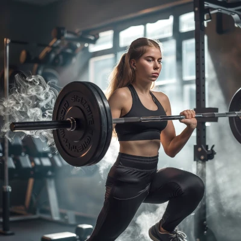

Aktuality
Zde naleznete veškeré novinky, které by vás mohli zajímat. Změny v trénincích, společné akce, nové vybavení apod.
Co tě čeká
Co je kondiční cvičení, co od něj čekat a proč to zkusit? 🤔
Jedná se o moderní formu cvičení s prvky crossfitu, při kterém procvičíte celé tělo. Zahrnuje jak kardio, tak silové cvičení, proto se jedná o jeden z nejkomplexnějších druhů tréninků.
Žádný trénink není stejný, využíváme širokou škálu vybavení včetně veslařských trenažérů, Echo Bike, SkiErg a bikeErg.
Tréninky probíhají pod vedením certifikovaných trenérů, takže nebojte - víme co děláme!
Tréninky nejsou jen pro pokročilé cvičence a svalovce. Přijít může i úplný začátečník. Když něco nezvládneš - nevadí. Trenér Ti ukáže lehčí variantu cviku.
Cvičíme s osou, kettlebelly, činkami, závěsnými systémy, ale i s vlastní váhou a spoustou dalšího vybavení.
Jak to celé začalo
Ahoj, Jmenuji se Tomáš Najman, je mi 35 let a žiji v Lázních Bělohrad. Sport a pohyb jsou mou velkou součástí a provázejí mě prakticky celý můj život. Jako dítě jsem začal aktivně hrát volejbal, a i když se mu již nevěnuji naplno, rád si ho stále rekreačně zahraji. Mám rád cyklistiku, turistiku, v zimě lyže, běžky a v neposlední řadě crossfit.
Právě crossfit mě inspiruje při vymýšlení jednotlivých tréninků. Snažím se, aby žádný trénink nebyl stejný a aby vás vždy něco překvapilo. Kruhové tréninky jsem začal pořádat v roce 2018 čirou náhodou. Sám jsem si chodil cvičit na workoutové hřiště v LB jen se základním vybavením, pár známých se ke mně přidalo a „kruhové cvičení LB“ bylo na světě. V roce 2020 jsem absolvoval akreditovaný kurz instruktora fitness, abych posunul dál nejen sebe, ale i vás. V roce 2023 přišla příležitost odkoupit a vést kondiční cvičení v Jičíně. Cvičení bylo v Jičíně velmi oblíbené, a proto byla velkou výzvou návštěvnost a oblíbenost zachovat. Což se, doufám, daří.
Od roku 2018 uplynulo mnoho času, já nabral mnoho zkušeností a jsem rád, že můžu milovníkům pohybu a cvičení nabídnout nejen profesionální přístup a dvě profesionálně vybavené tělocvičny, ale i komunitu lidí, s nimiž budete sdílet stejné zájmy.
Aby bylo vše sjednoceno a jasné, máme od roku 2025 jednotný název pro Jičín i Lázně Bělohrad, a to Kondiční cvičení.